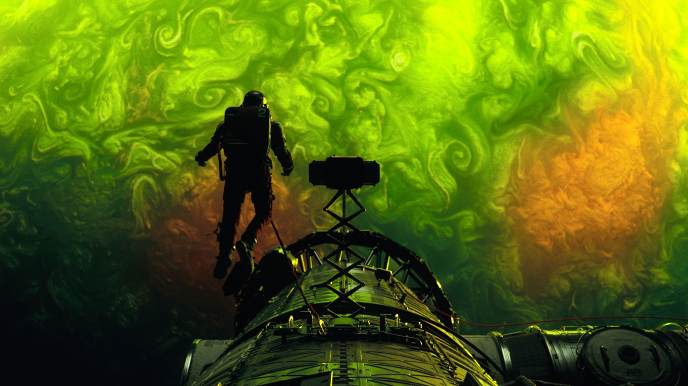
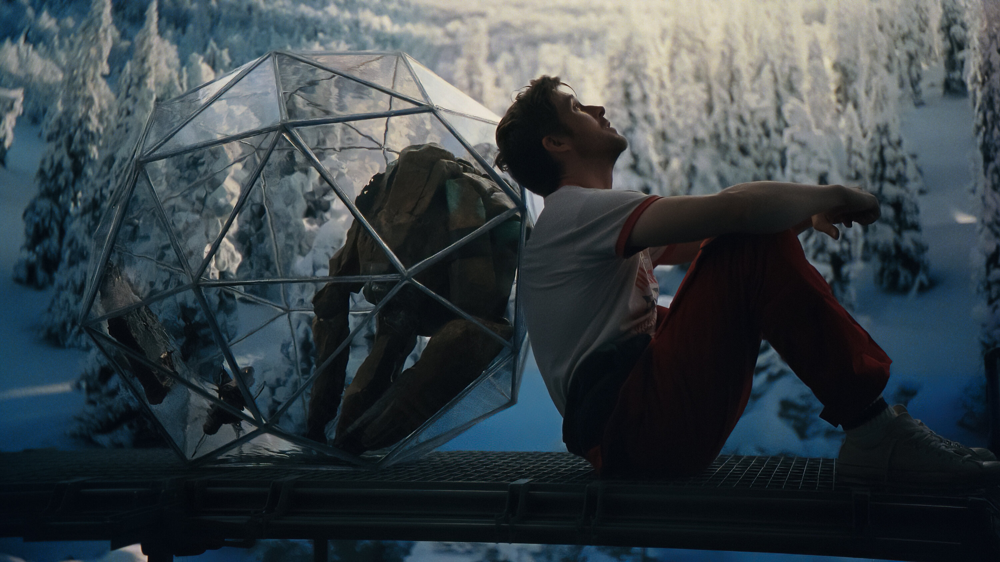

Música
tocando: Daniel Pemberton: Time Go
Fishing
Música
tocando: Daniel Pemberton: Time Go
Fishing
Música
tocando: Daniel Pemberton: Time Go
Fishing
Música
tocando: Daniel Pemberton: Time Go
Fishing
A trilha sonora original, Time Go Fishing, é do filme Project Hail Mary, ou Devoradores de Estrelas em português, que acompanha Ryland Grace, um professor que acorda sozinho em uma nave espacial com amnésia, encarregado de resolver um complexo mistério científico para evitar a extinção da Terra.

Decidi colocar a OST de algum dos meus filmes favoritos, e Project Hail Mary, que atualmente é meu segundo filme favorito, foi o escolhido.

Esta música toca no momento de mais drama e suspense no filme, onde qualquer erro pode custar a vida dos
personagens, aquele momento em que o cinema todo prende a respiração.
Após 2 minutos de instrumentos de percussão, instrumentos não tradicionais, e gravações percussivas orgânicas,
o clímax inicial da trilha sonora começa.
O refrão segue uma sequência de notas conhecida no mundo músical: a melodia de Dies Irae. Para aqueles que não possuíam o conhecimento do que é Dies Irae quando assistiram o filme, talvez não tenham sentido o que a música estava dizendo, mas para aqueles que já tinham o conhecimento prévio, imediatamente entenderam que nem tudo acabaria bem...
Dies Irae é um famoso hino litúrgico medieval escrito no século XIII, tradicionalmente atribuído ao monge franciscano Tomás de Celano. A letra descreve o Juízo Final, o momento em que a humanidade enfrentará o julgamento divino.
Essa melodia gregoriana acabou por se tornar o maior símbolo musical da morte na cultura ocidental. Quando um compositor usa essa melodia, ele busca evocar terror, tragédia, ou até mesmo o sobrenatural.
Logo, ao ouvir essa melodia na cena mais tensa e emocionante, a sensação é que, possívelmente, tudo vai dar
errado.
Por mais 4 minutos, a música continua a ditar a emoção da cena, porém, quando a música bate a marca dos 6
minutos, e a tensão já intensificou ao máximo, chegando no clímax final, a música finalmente tem seu desfecho,
desfecho este que é, surpreendentemente, esperançoso.
É aqui que a música se torna especial. Ao invés de ter o desfecho clássico e sombrio que sempre acompanha Dies Irae, Daniel Pemberton muda as notas da melodia para um tom mais agudo, o que transmite a sensação de esperança para o espectador.
Além do mais, sons sintéticos que representam os alienígenas do filme se juntam ao coral de vozes humanas, simbolizando a união entre as duas espécies pela sobrevivência de suas civilizações.
É essa escolha e capacidade de transformar uma melodia que carrega o peso da morte em uma música que traz esperança que me fez colocar essa OST em meu site.
